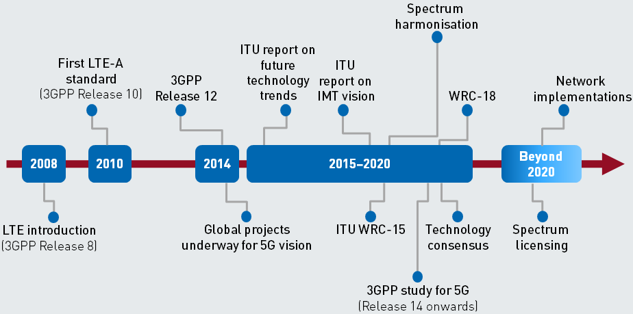
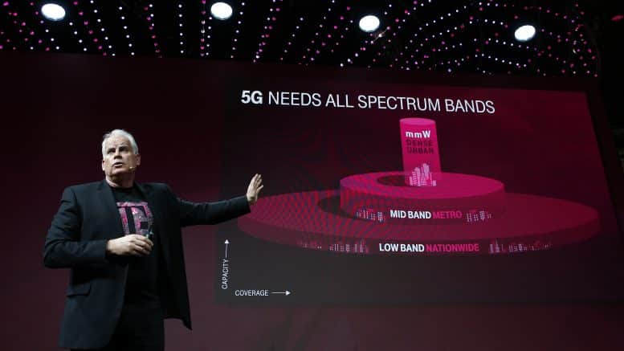
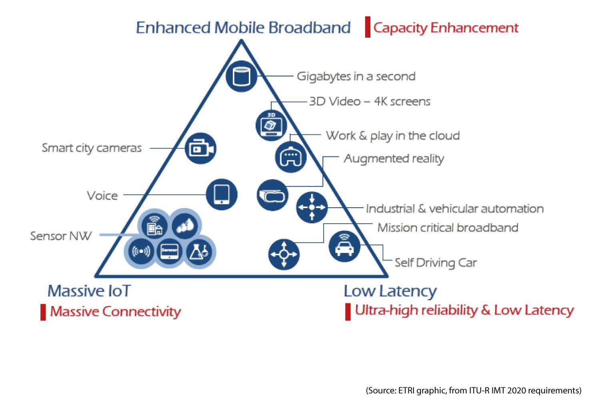

Talkin’ ’bout my (5th) Generation
By Peter Bloom, General Coordinator
For the past year and a half, part of my professional duties have included thinking about how to keep community networks relevant in an evolving technological and regulatory landscape. As such, I attended telecom industry conferences, read a lot and spoke with people working on connectivity from different backgrounds and approaches. A recurring theme was the massive transition to a “4th Industrial Revolution” that we are supposedly already in the midst of. Although some of the conversations didn’t directly name it as such, it’s clear that everyone recognized big changes on the horizon. This was made most evident to me at the 2018 GSMA Mobile World Congress, where I was struck, worried even, by the change in discourse from connecting people to connecting things. The colonial nature of the ‘connecting people’ discourse is problematic in its own right, but when that is being supplanted by ‘connecting everything’, further concern is warranted. My conclusion is that the imperative to ensure everyone has the right to communicate and access information, which is laudable, is being supplanted by this new drive to connect the already connected even further through a whole host of new and upgraded technologies.
“Our industry purpose to connect everyone and everything to a better future.” – Mats Granryd, General Director of GSMA
Although these technologies vary widely from Artificial Intelligence and Machine Learning to multi-access edge computing, Network Function Virtualization and slicing, I will use 5G networks as the primary lens for this piece. I decided to do so as 5G is being positioned as the underlying connectivity infrastructure upon which many of these technologies will rest and through which people and things will interact. The focus on infrastructure has been central to the work myself and others do as part of Rhizomatica around digital and communication rights. Infrastructure is where the rubber meets the road, so to speak, and involves technology, regulation, economics and people. Infrastructure is the means by which these new technologies will actually come into our lives in a physical sense. And while infrastructure, especially of the digital kind, is generally meant to be as invisible as possible, it is ever more crucial to understand and critically engage with as citizens.
Network operators, at least in some rich countries, are on the cusp of rolling out 5G networks. The push towards 5G encompasses a plethora of interest groups, particularly governments, financing institutions and telecommunications companies, that demands to be better analyzed in order to understand where things are moving, whose interests are being served and the possible consequences of these changes. 5G is being positioned by the big telecom companies as “the thing” — a suite of technologies that will solve all of the world’s problems (particularly if you live in a well-connected place already) and make lots of money for everyone in the process.
“5G holds the promise of applications with high social and economic value, leading to a hyper-connected society in which mobile will play an increasingly important role in people’s lives.” – Mats Granryd, General Director of GSMA
Hearing this same message over and over, as if anyone associated with the telecom industry or its regulation were ventriloquist’s dummies got me thinking: what does this better future supposedly hold? And, how concerned or optimistic should we be?
First, we need to understand where 5G comes from. The G is for generation, so the 5th generation of a series of wireless mobile or cellular technologies that we have been interacting with for the better part of 30 years. As the business potential of these technologies grew and became more consolidated the telecom industry, though the 3GPP, started creating technical specifications every ten years, hence the successive generations of 2G, 3G, etc. Something called IMT-2000 are the specifications for 3G, IMT-2010 is 4G and now 5G is IMT-2020. IMT-2020 is the culmination of ten years of development and lobbying with its codification (perhaps coronation is a better word) coming later in the year at an International Telecommunications Union event called World Radio Congress.

I like to think about World Radio Congress as the Olympics for spectrum. Every three or four years representatives of national governments from around the world gather to discuss and modify radio spectrum regulations as part of a UN-sanctioned (through the ITU) process. There are years of committee meetings that happen regionally beforehand in which mainly governments and industry decide how to enable new technologies via radio spectrum. While some parts of the ITU have become more inclusive of other voices, the Radio Bureau (ITU-R), which organizes WRC and decides on binding international treaties, is not particularly friendly to civil society input. Just being able to keep up with all the meetings is beyond the budget of almost any NGO.
Due to the technical requirements, which I will discuss in a bit, an unprecedented amount of spectrum is being identified for 5G networks. The ITU coordinates spectrum planning globally, and decisions are codified at each World Radio Congress (WRC). Over the past few WRC’s, 1.2 GHz of spectrum was identified for IMT-2010 (4G). IMT-2020 (5G) is a whole new ballgame, with over 10 GHz of additional spectrum being targeted and each operator requiring much larger blocks of spectrum to provide service. Much of this extra spectrum is in the millimeter-wave bands, above 24GHz, making it really good for sending lots of data over very short distances. But there is also a pretty rough fight happening in lower bands, pitting existing C-Band satellite operators against the mobile industry. The takeaway is that backers of 5G are proposing to use an unprecedented amount of spectrum, a public good, exclusively for their services. As more spectrum is identified by ITU for these mobile services, it becomes incredibly hard for other types of technology or service provision models to use those frequencies and develop. In many countries, spectrum for IMT-2020 has already started to be auctioned for huge sums of money.

5G, as a technical proposal, is meant to do three things. Enhance the capacity of existing mobile broadband (e.g. virtual reality on your phone), connect way more devices (e.g. Internet of Things), and increase the reliability and lower the latency of networks (e.g. remote surgery).
Enhancing mobile broadband is fairly straightforward and offers the possibility to do things like play a virtual reality game attached to your mobile device, which requires downloading huge amounts of data constantly and very quickly. The stated goal is 1 Gbps to your device, or better. To put that in perspective, the best performing 4G networks right now top out at about 45 Mbps, so not even 5% of the goal for 5G. The next aspect is the ability to connect way more devices, with the goal for 5G to connect up to 1 million devices per square kilometer, compared to around 2,000 connected devices per square kilometer with 4G. For some perspective, Manila has the highest population density of any city in the world with 43 thousand people per square kilometer. 5G networks would allow for 23 connected devices per person. Finally, 5G designers have come up with a mouthful: Ultra-high Reliability and Low Latency, to talk about making networks more able to support “mission-critical” applications such as smart grids, remote surgery, real-time haptic feedback, and self-driving cars. In layperson’s terms, all packets must get to their destination and do so extremely quickly (in 1 millisecond).

From these three very ambitious technical proposals for 5G, it is clear that the technology is being positioned as a platform for industries and consumers alike — or in the lingo of the mobile industry: “new verticals”. These verticals are entire business realms that 5G networks will become the underlying communications and support infrastructure for. And seemingly no industry is to be ignored or left “un-smart”. At a recent conference I attended, I was surprised (perhaps horrified is a better way to put it) to learn there is a technical standard called V2X or Vehicle-to-Everything, which consists of: Vehicle-to-Vehicle (V2V), Vehicle-to-Pedestrian (V2P), Vehicle-to-(roadway)-Infrastructure (V2I), and Vehicle-to-Network (V2N) communications. When I think about Vehicle-to-Pedestrian communication it makes me wonder what happens to the pedestrian that is not connected to the network through some device. Do they get run over by the self-driving car that can’t sense them? Does that person wait at some future street corner indefinitely for the traffic light to turn green because the smart crosswalk doesn’t know they are there?
V2X, as just one example, raises fundamental issues about how we move around in space, much of which is (still) public, that are being dictated by engineers and lawyers in technical committees whose bosses have a huge stake in seeing certain proprietary technologies prosper. This is similar to the argument made around how public discourse and access to news and information is being shaped, often with grave real-world consequences, by algorithms programmed in and for the benefit of those already in power. With the rise of the 4th Industrial Revolution, we are facing the “code is law” maxim being taken way further into our lived experience of the physical world than many of us probably want. As Lessig, the coiner of the phrase, points out, code, just like law, is: “an architecture—not just a legal text but a way of life—that structures and constrains social and legal power”. When the book was published in the late 1990’s, the issue was how to protect intellectual property when the Internet and computers allowed for essentially free copying and distribution. What we are increasingly facing, and that 5G is all about making happen, is the complete penetration of a new, ‘smarter’ generation of those computers and the Internet into every aspect of our physical lives. The rise of so-called cyber-phyiscal systems.
“With 5G, networks will be transformed into intelligent orchestration platforms.”
As discussed above, 5G proposes to connect way more devices, with many of these not being only phones and computers, but also sensors, terrestrial vehicles, industrial equipment, implanted medical devices, drones, cameras, etc etc. For those of us concerned about the surveillance capacity and privacy issues related to current networks and Internet platforms, brace yourself because you ain’t seen nothing yet. The fundamental underlying proposal of the supposed 4th Industrial Revolution that 5G networks are meant to help bring about is to connect everything with everything else while also making more things, including our bodies, more connectable. If the current way our personal data are dealt with is any indication of the future, this cyber-physical melding will be a disaster for privacy and anonymity, in addition to being incredibly vulnerable to being cracked and manipulated, as is already happening with IoT botnets like Mirai. So while the 4th Industrial Revolution is not only about 5G networks, it’s nearly impossible to imagine without that infrastructure in place. It’s also, at least from my analysis, hard to imagine this not taking us to a very dark place.
One of the key takeaways I had from attending MWC, and from subsequent telecom industry-related meetings, was that the chip manufacturers are setting the agenda. I was under the naive impression it was the network operators, but no. It makes some kind of perverse sense that if your business is to build processor and base-band silicon it would make sense for you to try and get as many things to have chips in them as possible.
Many of the 20 billion connected devices that we are all supposedly going to buy by 2020, are things that were not connected devices before. Think about your toaster oven and your refrigerator and your washing machine all being connected as part of your smart home. And your car too. If you have a heart problem, your pacemaker. And so on. The makers of these networking chips are companies like Qualcomm, Intel, Broadcom and Samsung. These are huge companies and they know how to throw their weight around. The point being, when they set their mind to it, they are able to spur industry-wide changes to benefit their bottom line. At MWC there was a ton of hype around 5G because it creates more business for the whole supply chain, but the apex predators remain the chipset manufacturers for now.
In order for them to get what they want, the chip makers have to convince everyone else in the industry it is a good idea. It was interesting to see at MWC how the network operators were subtly bridling at rolling out 5G because most of them are still either deploying or servicing debt related to 4G services or still can’t figure out how 5G will make them enough money to justify the expense. But since the telecom industry is so command-and-control, the network operators have to toe the party line, which, from what I have been able to glean, is set primarily by the silicon manufacturers and network equipment vendors like Huawei and Ericsson. What struck me about this arrangement is how fundamentally despotic, or perhaps banal, it all is. We as a society are meant to fundamentally transform how we do things in order to accommodate the business goals of people who build tiny processor chips? The troubling part of what is coming is that engaging with network technologies has always been more or less optional and it feels like the option to not connect is being foreclosed. This is why the Vehicle-to-Pedestrian thing so unnerved me when I heard about it. How real is my option to not participate in the network if I wish to simply walk around in public safely?
What remains to be seen is who will step up and actually pay for these networks to be built and if they will even all be owned and operated by traditional telecoms operators. Estimates for the cost of 5G network deployment and associated investment in technology and spectrum are at $2.7 trillion US dollars, according to some estimates! The problem is it is not clear if this is actually a sound investment as the incremental increase in revenue for things like IoT is not that high and it costs a lot of money to deploy dense clusters of 5G microcells in urban areas.
“Spending on 5G roll out is just the thin end of the wedge. This project is actually about funding the growth of the Internet of Things and industrial connection to that […] In the automotive industry, for instance, 5G will be important for tracking components through the supply chain and in to the manufacturing process, then right through to an end product that has connectivity beyond anything we have seen so far.” – Tony Wonfor, Greensill managing director and telecoms finance specialist
Beyond the chipset makers and network operators, 5G networks will enable new entrants into the data harvesting and selling market. Though unlikely, maybe they’ll pay for it?
Since large Internet platforms like Google and Facebook have already proven the business model for this, it is likely that the companies selling your smart devices will also be collecting and monetizing the data that streams back to them, if they aren’t already. So way more devices will be collecting way more personal information about you and that information will be collected by the crummy ones we already know about, plus a slew of new companies that likely have no idea how to handle your information safely, and then sold on to people willing to pay for that information. Furthermore, the kind of information being collected is going to be much more personal. Just look up “smart menstrual cup” online and you will see what I mean. This ridiculous product pre-dates 5G networks, but the trend is towards more and more of these network-enabled products coming to market. The addition of the networking chip into your personal device makes the information harvesting aspect as seamless and frictionless as possible. So I get to sell you a “smart” gadget and also make money off the data that I collect from it. There will perhaps be some marginal benefit to the consumer from this aggregation of networked personal devices but the big winners will be those collecting, bundling, analyzing and selling the data produced. Unfortunately, the more is known about us the more vulnerable we are to individual and mass manipulation.
Another big winner here will be the surveillance state. Headlines about 5G at the moment are being captured by the fight to block Huawei, a Chinese company with close ties to the State, from becoming the major network equipment vendor in the West. The argument is that if Huawei sells the underlying network infrastructure for 5G, the Chinese government will gain immense surveillance capacity as a result. While this may be true and while China has a terrible record with regards to respecting their citizens’ privacy and has shown a willingness to engage in cyber-sabotage and warfare, it is not as if governments in the West are that much better. Wholesale government spying on everyday people is commonplace and widespread. 5G networks and the fact that so many more devices will be collecting personal information will undoubtedly make this worse. Furthermore, the reach and potential danger of cyber-attacks on connected critical infrastructure is staggering, as mentioned above.
“The more connected we are, and 5G will make us the most connected by far, the more vulnerable we become.” – Retired Air Force Brigadier General Robert Spalding
Lots of money will exchange hands in regards to 5G networks and the data they enable to flow around, that much is clear. Beyond the digital or data economics of the whole thing, there are also regular ol’ economics at play. The biggest one being how these networks will increase automation and therefore eliminate the need for labor (or at least vastly transform it). As an example, Uber and Lyft, two AI and mobile-enabled transportation companies, are allowed to lose so much money because they are providing a useful service to Capitalism in that they are training their AI with so much data that they will eventually be able to eliminate human drivers altogether. Again, this brave new world cannot come about without the underlying network infrastructure to enable it, as Lyft directly states in their public filing papers with the US Securities and Exchange Commission. Furthermore, the importance of the move towards autonomous vehicles to their bottom line is also plainly laid out in the filing documents:
“Within 10 years, our goal is to have deployed a low-cost, scaled autonomous vehicle network that is capable of delivering a majority of the rides on the Lyft platform. And, within 15 years, we aim to deploy autonomous vehicles that are purpose-built for a broad range of ridesharing and transportation scenarios, including short- and long-haul travel, shared commute and other transportation services. […] If we are unable to efficiently develop our own autonomous vehicle technologies or develop partnerships with other companies to offer autonomous vehicle technologies on our platform in a timely manner, our business, financial condition and results of operations could be adversely affected.”
As our old pal Karl Marx explained, surplus value is equal to the new value created by workers in excess of their own labor-cost, which is appropriated by the capitalist as profit when products are sold. Once you have developed them, which is admittedly not cheap, you don’t have to pay AI or robots to drive your cars, so you can make way more profit. Push back against this pessimistic viewpoint exists, with the argument being that this new form of hyper-connectivity will create an Internet of Skills: “an enabler for remote skillset delivery [that will] democratize labour globally the same way as the Internet has democratised knowledge”. This argument reminds me of what we were promised by neoliberal globalization in the 1990’s. Actually, its worse in some ways, as this skill delivery will happen remotely, making it possible for people to work under one labor regime while producing value in another. This obviously happens all the time in manufacturing and other “outsourced” industries, but this new arrangement would make it possible to outsource more types of jobs, first to poor people in poor countries, and then to robots or computers, which would eliminate those jobs altogether.
So what might stop or mitigate what is coming? Maybe much of the hype is for things that people don’t actually want. As we know, our current system is pretty good at convincing us we want things we didn’t even know we did, but regardless, there will hopefully come a point at which people as consumers and as a society simply don’t see the value in what is being offered or find it actually makes the world a worse place. Whether or not we are successful at that level, it is clear that governments and industry are working closely together to ensure the infrastructure for the 4th Industrial Revolution is put in place, whether we like it or not. One telling example is the recent Federal Communications Commission (FCC) rule limiting what local authorities can charge telecom companies for installing cell sites for 5G wireless networks, or whether they can refuse to have the networks installed at all.
As mentioned above, the rise of cyber-physical systems, aided by the spread of 5G networks, presents clear and profound challenges, both personal and collective. As networked technologies embed themselves further into our lives, those that are traditionally oppressed will feel the majority of the negative consequences. This piece has talked about surveillance and labor precarity as two important ones, but there are other negative ways this will manifest, some of which we cannot even imagine now. At a fundamental level, the technologies being proposed and implemented are designed to create an ever-tighter feedback loop of information. Networked devices will collect more and more intimate information and in so doing create huge data sets on which to facilitate predictive analytics and eventually automation, which in turn will be aided by the existence of the network itself.
This, in my opinion, all comes down to control. And this increased control by States and corporations is coming just at the right time (for them). While new businesses have been created by networked technologies, many of these have succeeded directly on the backs of workers. This against a backdrop of a planet being damaged and transformed by human-related climate change. Perhaps we are getting too far afield here, but the point is that the ability for people to lead dignified lives around the world is diminishing due to economic inequality and a warming planet. This has already started, and will continue, to lead to social unrest. But at the end of the day, both States and corporate powers recognize that they must augment their capability to control ever-increasingly desperate people.
But all is not lost. Workers in the gig economy and even those working for large Internet companies are pushing back. Ethnic minorities and people of color, too. This is, of course good news. Getting organized is the only way we will be able to mitigate the the negative effects of what is coming. There is not a technological solution to the issues raised in this piece. We can try to circumvent and encrypt, and we can chose to be completely disconnected from all of these innovations, but these networks are going to be installed eventually and we need to come up with a more coherent and collaborative strategy about what we are going to do about it. The people on the front lines, those already feeling the brunt of the negative aspects of this system and organizing around stopping it, must be our guiding light.